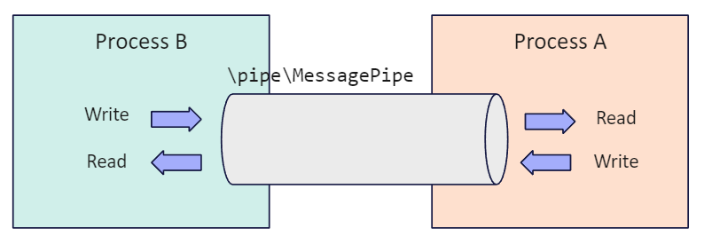
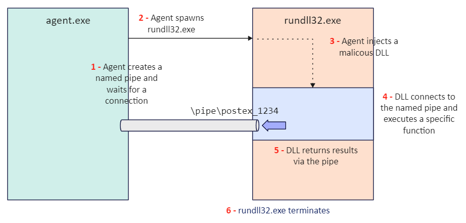
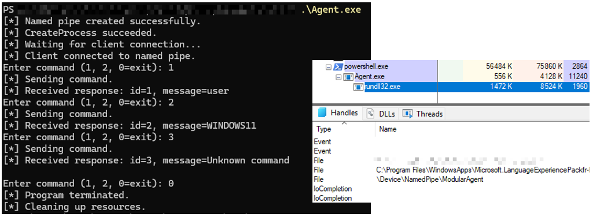

Introduction
In basic communication models between an agent and a C2, the interaction is limited to the C2 sending commands, which are executed by the agent in its own address space.
However, this approach has several limitations. Firstly, in the event of a crash or detection, the agent is lost, resulting in a communication breakdown. Secondly, it lacks modularity, since everything depends directly on the agent.
Modern models, such as Cobalt Strike, rely more on modular agents, which delegate execution to external processes and communicate through IPC channels (such as named pipes).
This article aims to provide a better understanding of how these models work.
The first part will present their underlying principles, followed by a second part offering a pedagogical implementation inspired by them.
Modular Agent Principles via Named Pipes
Before diving into the topic, let’s briefly recall what a named pipe is.
A named pipe is an inter-process communication (IPC) mechanism that allows multiple processes to exchange data through an identified channel. Other IPC mechanisms exist, such as anonymous pipes and mail slots.
Unlike these, named pipes (on Windows) have the advantage of being bidirectional and usable remotely.
💡 In a previous article, this mechanism was already discussed through rpcclient, which used Named Pipes over SMB to interact with remote services such as SAMR.
Based on this definition, we can represent the following diagram:

Another key aspect is modularity, which consists in separating orchestration (the agent) from module execution (explained below).
However, since these two components (the agent and its module) run in separate address spaces, the module has no native way to return its results to the agent. Modern modular agents therefore use named pipes to handle this communication.
💡 Named pipes are just one of several ways for two processes to communicate. Another approach, for example, would be to write the results to shared memory (memory mapping), which the agent can then retrieve.
In a Cobalt Strike configuration, an agent (Beacon) injects a malicious DLL into a sacrificial process (e.g., rundll32.exe), then executes it. During execution, the DLL sends its results to the agent via a named pipe:

In practice, the agent is generally not present on disk but is itself injected into an existing process. Moreover, the flow is not always as straightforward and may involve multiple intermediate steps.
In all cases, this is a modular architecture, since the agent orchestrates execution without performing it directly. In the event of a crash or if the module is detected, the agent is preserved.
Modular Agent Implementation
In this section, we will reproduce the mechanism presented earlier. However, instead of injecting a DLL into a temporary process, it is executed directly via rundll32.exe. The principle remains the same, as the DLL runs in a separate process, thereby reproducing execution delegation.
For the sake of conciseness, only the essential parts of the code are detailed. The full code is available in the GitHub repository.
The main development steps are as follows:
- Implementation of the agent
- Handling communication via named pipes
- Implementation of the module (DLL)
Agent Development
The agent, responsible for orchestration, performs the following tasks:
- Creating a named pipe and waiting for a connection
- Launching
rundll32.exeto execute the module (DLL) - Communicating with the module via a named pipe (covered in the next section)
Initially, the creation of a named pipe follows a client-server model. The server is the one that creates the pipe and waits for a connection (here, the agent), while the client is the one that connects to it (the module).
To establish a named pipe, two main functions are used:
CreateNamedPipe, which creates the pipeConnectNamedPipe, which waits for a connection
For the CreateNamedPipe function, it is necessary to specify a bidirectional pipe (using the PIPE_ACCESS_DUPLEX flag), use message mode rather than byte mode (PIPE_TYPE_MESSAGE) to avoid handling message reconstruction and opt for blocking mode (PIPE_WAIT) to ensure structured and synchronous communication.
// Server is the one that creates the pipe (CreateNamedPipe)
// Client (DLL) is the one that connects to it (CreateFile)
HANDLE hNamedPipe = ::CreateNamedPipe(L"\\\\.\\pipe\\ModularAgent",
PIPE_ACCESS_DUPLEX,
PIPE_TYPE_MESSAGE | PIPE_READMODE_MESSAGE | PIPE_WAIT,
1, // One instance of a pipe
4096, // out buffer (server → client)
4096, // in buffer (client → server)
0,
nullptr
);
For the ConnectNamedPipe function, it is sufficient to pass the handle of the created pipe as a parameter. An important point to note is that any error other than ERROR_PIPE_CONNECTED indicates an issue with the pipe connection.
if (!::ConnectNamedPipe(hNamedPipe, nullptr)) {
if (::GetLastError() != ERROR_PIPE_CONNECTED) {
printf("[!] ConnectNamedPipe failed.\n");
::CloseHandle(hNamedPipe);
return 1;
}
}
For the creation of the rundll32.exe process, it will load the module (DLL) and execute the exported function ExecuteCommand:
extern "C" __declspec(dllexport)
void CALLBACK ExecuteCommand(HWND hwnd, HINSTANCE hinst, LPSTR lpszCmdLine, int nCmdShow) {
// snip
}
Handling communication via named pipes
Communication handling relies on the use of the ReadFile and WriteFile functions, which allow reading from and writing to the pipe, respectively. Two key aspects must be considered:
- Avoiding deadlock situations
- Factorizing the code through generic functions shared between the agent and the module
A deadlock is a situation where two (or more) entities are each waiting for the other to act, thus blocking execution. This can occur, for example, when both the agent and the module are waiting at the same time. To avoid this issue, it is necessary to define a clear sequence of operations between the two parties.
In this implementation, when one party performs a read operation, the other performs a write operation, and vice versa:
// Agent
while{
WriteFile(...)
ReadFile(...)
}
// Module (DLL)
while{
ReadFile(...)
WriteFile(...)
}
In a second step, to avoid code duplication accros both components, read and write operations are encapsulated into generic functions (send and receive), shared between the agent and the module. The trade-off is a loss of granularity in error handling (did the failure occur on the agent or module side, during sending or receiving?).
Example of the receive function:
bool receive(HANDLE pipe, void* data, DWORD size) {
DWORD read;
if (!ReadFile(pipe, data, size, &read, NULL) || read != size) {
DWORD err = ::GetLastError();
if (err == ERROR_BROKEN_PIPE) {
printf("[!] Pipe closed by peer\n");
}
else {
printf("[!] ReadFile failed (%lu)\n", err);
}
return false;
}
return true;
}
Finally, regarding the exchanged data, the agent sends a Command structure containing the identifier of the command to execute (1 or 2). The module processes it, then returns a Result structure with the output, which the agent displays.
// Sent by the server (agent)
struct Command {
int commandId;
};
// Returned by the client (module)
struct Result {
int commandId;
char message[256];
};
Module Development
The module’s development is simpler: it is a DLL launched by the agent via rundll32.exe. It exposes an exported function, ExecuteCommand, responsible for connecting to the pipe created by the agent using CreateFile :
extern "C" __declspec(dllexport)
void CALLBACK ExecuteCommand(HWND hwnd, HINSTANCE hinst, LPSTR lpszCmdLine, int nCmdShow) {
// Server is the one that creates the pipe (CreateNamedPipe)
// Client (DLL) is the one that connects to it (CreateFile)
HANDLE hPipe = ::CreateFileA("\\\\.\\pipe\\ModularAgent",
GENERIC_READ | GENERIC_WRITE,
0,
NULL,
OPEN_EXISTING,
0,
NULL);
// snip
}
Once connected, it receives the command via the pipe (Command structure), executes the corresponding function, and then returns the output (Result structure) to the agent.
Example of the GetUserInfo function, executed in response to command 1 :
void GetUserInfo(HANDLE hPipe, Result& r, int commandId) {
r.commandId = commandId;
char userName[128];
DWORD size = sizeof(userName);
if (!GetUserNameA(userName, &size)) {
strcpy_s(userName, "[!] Failed to retrieve user name.");
}
strcpy_s(r.message, userName);
send(hPipe, &r, sizeof(r));
}
Demo
At runtime, the following communication is observed. It is maintained until the agent terminates it (command 0). On the right, using Process Explorer, the created pipe can be clearly observed.

Conclusion
In conclusion, the strength of a modular agent lies in the fact that execution capabilities are offloaded to modules. Thus, an agent can load different modules on demand by executing temporary processes. In the event of a crash or detection, only the module is isolated or terminated, while the agent, if it remains undetected, is harder to detect.
Named pipes, on the other hand, are simply a means of communication between these processes.
Resources
- https://thedfirreport.com/2021/08/29/cobalt-strike-a-defenders-guide/
- Yosifovich, Pavel. Windows 10 System Programming, Part 2. Chapter 18: Pipes and Mailslots, 2021.